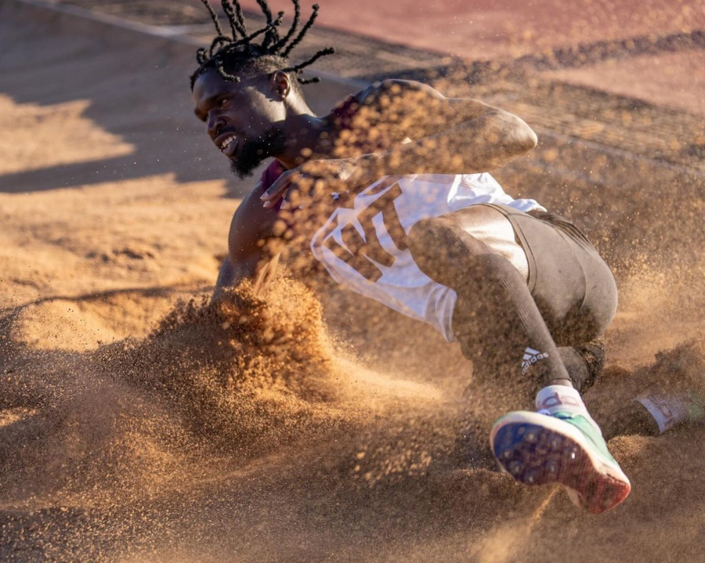
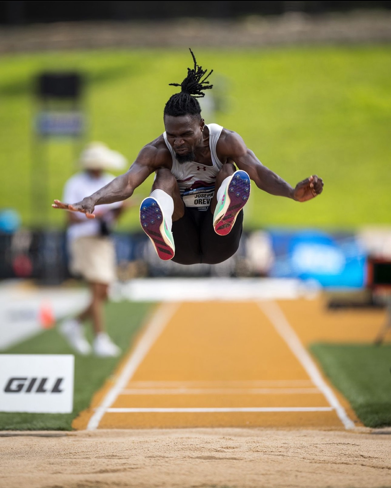
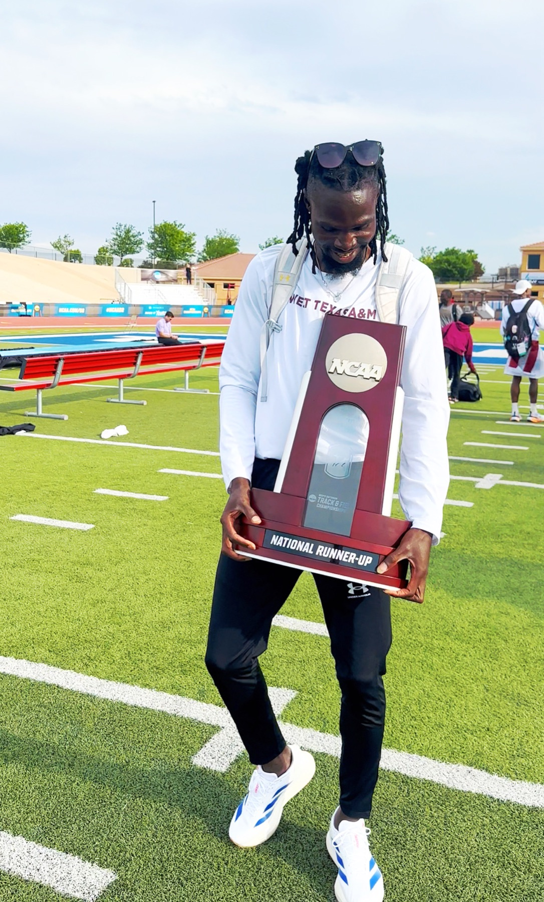

Built around
the jump.
Joseph Oreva · Competitive long jumper.
NCAA Division II outdoor national runner-up in 2024 and 2025.

Long jump.
Approach. Takeoff. Flight. Landing.
The athlete
behind the jump.
Joseph Oreva is a Nigerian competitive long jumper with NCAA Division II outdoor national runner-up finishes in both 2024 and 2025. His athletics career includes All-American honors and the WTAMU indoor and outdoor long-jump records.
This portfolio brings together his national championship achievements, school records, and a growing visual record of competition.
Career at a glance
DETAILS & MILESTONES- Discipline
- Long jump
- National runner-up
- 2024 & 2025
- School records
- Indoor & outdoor
Achievements
INTERNATIONAL / COLLEGIATE / RECORDSInternational and Nigerian achievements
- 2013LONG JUMP
African Youth Athletics Championships — gold medal
Long jump gold medal at the African Youth Athletics Championships in Warri, Nigeria.
- 2019 & 2022NIGERIA
Two-time Nigerian National Long Jump Champion
Nigerian national long-jump titles in 2019 and 2022, confirmed by the athlete. World Athletics currently lists one national title.
- NIGERIALONG JUMP
International representation
Represented Nigeria in long jump.
Collegiate achievements
- 2025LONG JUMP
NCAA Division II outdoor national runner-up
Second place in the men’s long jump at the NCAA Division II outdoor national championships.
- 2024LONG JUMP
NCAA Division II outdoor national runner-up
Second place in the men’s long jump at the NCAA Division II outdoor national championships.
- HONORSNCAA DIVISION II
Multiple-time NCAA Division II All-American
All-American honors in long jump.
- 2024INDOOR
NCAA Division II Indoor Championships — fifth place
Fifth place in long jump at the NCAA Division II Indoor Championships.
- 2023 & 2024LONE STAR
Lone Star Conference indoor long jump champion
Indoor conference long-jump titles in 2023 and 2024.
- 2024 & 2025LONE STAR
Lone Star Conference outdoor long jump champion
Outdoor conference long-jump titles in 2024 and 2025.
- 2022CARSON-NEWMAN
South Atlantic Conference regional athlete of the year
Regional athlete of the year recognition while competing at Carson-Newman.
Performance records
- RECORDSINDOOR / OUTDOOR
WTAMU long-jump records
Indoor and outdoor long-jump school records at West Texas A&M University.
- OUTDOORSCHOOL RECORD
WTAMU outdoor school record — 7.89 m
Outdoor long-jump school record at West Texas A&M University.
- PREVIOUSLONG JUMP
Carson-Newman and South Atlantic Conference records
Former long-jump record holder at Carson-Newman and in the South Atlantic Conference.
The 7.93 m jump at the 2024 NCAA Division II outdoor national championships was wind-assisted.
Competition photographs
THE CAREER IN FRAME
In flight
Joseph extends his legs toward the sand pit during a long jump.

National runner-up trophy
Joseph holds an NCAA national runner-up trophy on the athletics field.